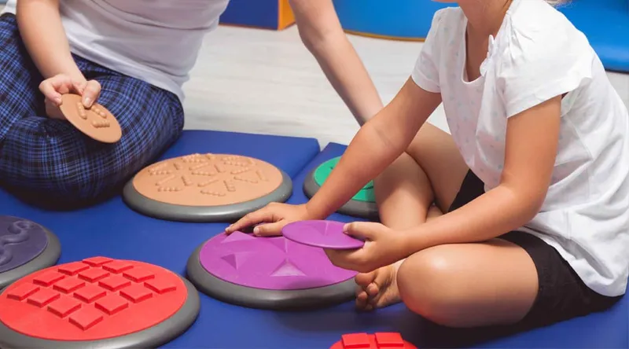
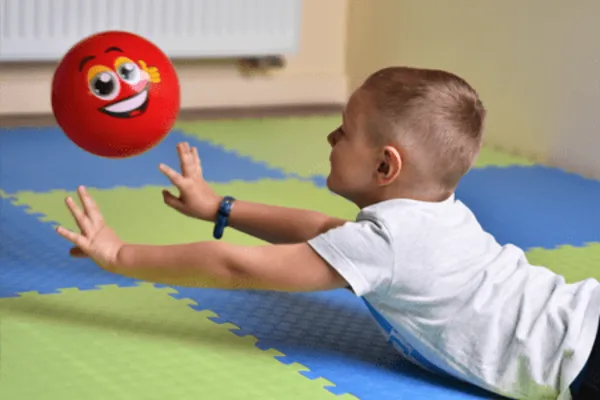

Wsparcie terapeutyczne
Wczesne wspomaganie rozwoju
Bezpłatne, indywidualne zajęcia terapeutyczne dla dzieci z opinią o WWR — z naszego przedszkola i spoza niego. Zespół specjalistów na miejscu otacza opieką dziecko i wspiera całą rodzinę.

Na czym polega
Czym jest WWR?
Wczesne wspomaganie rozwoju to bezpłatne, indywidualne sesje terapeutyczne prowadzone przez specjalistów: psychologa, logopedę, pedagoga specjalnego, terapeutę integracji sensorycznej i fizjoterapeutę. Celem jest jak najwcześniejsze pobudzanie rozwoju dziecka — od chwili wykrycia trudności aż do rozpoczęcia nauki w szkole.
Dla kogo
Komu pomagają zajęcia WWR
- Dzieci posiadające opinię o potrzebie wczesnego wspomagania rozwoju z poradni
- Dzieci z naszego przedszkola oraz spoza placówki
- Dzieci z opóźnieniem lub zaburzeniami rozwoju, trudnościami w komunikacji, mowie, integracji sensorycznej lub motoryce
- Rodziny — wsparciem i konsultacjami obejmujemy także rodziców

Zakres wsparcia
Terapie w ramach WWR
Zakres i intensywność zajęć dobieramy indywidualnie, na podstawie diagnozy i potrzeb dziecka.
Terapia logopedyczna
Neurologopedzi pracują nad artykulacją, funkcjami mowy i komunikacją — także metodą wspomagającą PECS.
Terapia psychologiczna
Psycholodzy kliniczni wspierają rozwój emocjonalny i społeczny dziecka oraz całą rodzinę.
Terapia pedagogiczna
Rozwój funkcji poznawczych, koncentracji i gotowości szkolnej w bezpiecznej atmosferze.
Integracja sensoryczna (SI)
Certyfikowani terapeuci pomagają w przetwarzaniu bodźców, koordynacji i samoregulacji.
Fizjoterapia
Praca nad postawą, napięciem mięśniowym i motoryką, dobrana do potrzeb dziecka.
Trening Umiejętności Społecznych (TUS)
Komunikacja, współpraca i rozpoznawanie emocji w małych grupach rówieśniczych.
Zespół
Kto prowadzi zajęcia
Zajęcia prowadzą doświadczeni specjaliści zatrudnieni na miejscu — psycholodzy kliniczni z przygotowaniem psychoterapeutycznym, neurologopedzi, certyfikowani terapeuci SI, fizjoterapeuta (mgr AWF) i pedagodzy specjalni. Rodzice nie muszą wozić dziecka do zewnętrznych gabinetów: cały zespół współpracuje pod jednym dachem i wspólnie planuje terapię.
Krok po kroku
Jak zapisać dziecko na WWR
-
Opinia o WWR
Uzyskaj w poradni psychologiczno‑pedagogicznej opinię o potrzebie wczesnego wspomagania rozwoju.
-
Kontakt
Zadzwoń lub wypełnij formularz — odpowiemy na pytania i umówimy spotkanie.
-
Spotkanie i diagnoza
Poznajemy dziecko i jego potrzeby, omawiamy z rodzicami zakres wsparcia.
-
Indywidualny program
Zespół opracowuje plan terapii i rozpoczyna regularne, indywidualne zajęcia.
Potrzebne dokumenty (wniosek i oświadczenie WWR) pobierzesz w sekcji Kontakt → Do pobrania.
Pytania rodziców
Najczęstsze pytania o WWR
Czy zajęcia WWR są płatne?
Nie. Wczesne wspomaganie rozwoju jest bezpłatne — finansowane z subwencji oświatowej. Rodzice nie ponoszą kosztów zajęć ani diagnozy prowadzonej w ramach WWR.
Czy z WWR mogą korzystać dzieci spoza przedszkola?
Tak. Z zajęć WWR mogą korzystać zarówno dzieci uczęszczające do naszego przedszkola, jak i spoza placówki. Wystarczy opinia o potrzebie wczesnego wspomagania rozwoju wydana przez poradnię.
Jak uzyskać opinię o WWR?
Opinię wydaje bezpłatnie publiczna poradnia psychologiczno‑pedagogiczna właściwa dla miejsca zamieszkania dziecka. Chętnie pomożemy zorientować się w procedurze i potrzebnych dokumentach.
Jakie terapie obejmuje WWR?
Logopedyczną, psychologiczną, pedagogiczną, integrację sensoryczną (SI), fizjoterapię oraz TUS. Zakres dobieramy indywidualnie do potrzeb dziecka.
Od jakiego wieku można rozpocząć?
Od chwili wykrycia niepełnosprawności lub trudności rozwojowych, aż do rozpoczęcia nauki w szkole. Im wcześniej, tym lepsze efekty wspomagania.
Czy rodzic jest zaangażowany w terapię?
Tak. Wczesne wspomaganie obejmuje wsparciem całą rodzinę — udzielamy konsultacji, pokazujemy, jak pracować z dzieckiem w domu, i wspólnie monitorujemy postępy.
Napisz do nas
Zapytaj o WWR
Masz pytania o wczesne wspomaganie rozwoju lub chcesz zapisać dziecko? Zostaw kontakt — oddzwonimy i wszystko wyjaśnimy.
- 690 629 501 · 510 318 948
- kontakt@czarodziejski-dworek.pl
- ul. Górczewska 89, 01‑401 Warszawa (Wola)